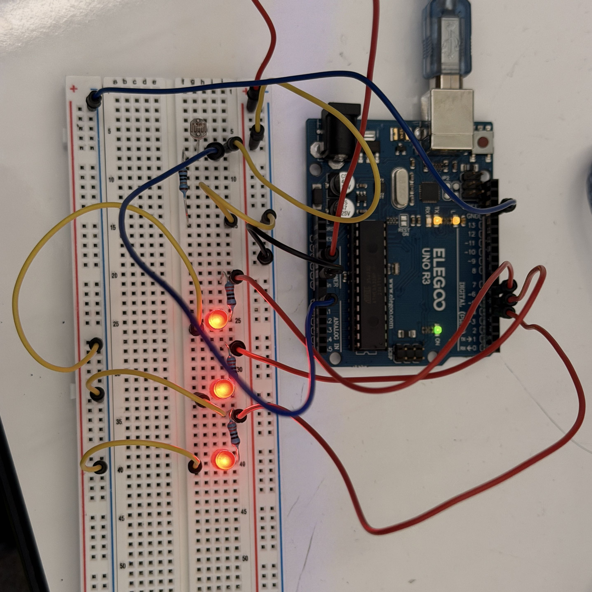

Assignment 3: Input Output!
Images:

Picture of the circuit I used for this assignment. The photoresistor is connected to an
analog pin, which turns the input voltage to a 10-bit value. This value is used to turn on
a corresponding number of LEDs (0-3), with a high light level turning on all of the LEDS
and a lower light level turning on some or none.
 This diagram represents the above circuit, showing both the photoresistor and LEDs. The
resistor values for the LEDs were chosen based on their maximum 20 mA current requirement,
while the fixed resistor in the voltage divider was selected based on the maximum 75K Ω
value of this photoresistor. The 100K Ω resistor ensures that a safe current level goes
to the Arduino.
This diagram represents the above circuit, showing both the photoresistor and LEDs. The
resistor values for the LEDs were chosen based on their maximum 20 mA current requirement,
while the fixed resistor in the voltage divider was selected based on the maximum 75K Ω
value of this photoresistor. The 100K Ω resistor ensures that a safe current level goes
to the Arduino.
Code:
// Indicates current brightness, as detected by a photoresistor, on a scale of 0-3 represented
// by three LEDs. Also prints values and LED status to the monitor.
// Uses code from the Arduino "Analog Input" and "Calibration" built-in examples.
const int analogInPin = A0; // Selects the analog in pin used
const int lowLed = 4; // Identifies the low signal LED
const int medLed = 5; // Identifies the medium signal LED
const int hiLed = 6; // Identifies the high signal LED
int sensorVal = 0; // Initial sensor value
int minVal = 1023; // Initial minimum sensor value
int maxVal = 0; // Initial max sensor value
int mapVal = 0; // Initial mapped sensor value
void setup() {
pinMode(lowLed, OUTPUT); // Sets the low signal LED pin to output
pinMode(medLed, OUTPUT); // Sets up the medium signal LED pin to output
pinMode(hiLed, OUTPUT); // Sets up the high signal LED pin to output
Serial.begin(9600); // Sets up serial for output text
while (millis() < 5000) { // 5-second calibration period
sensorVal = analogRead(analogInPin); // Sensor value reads from pin A0
if (sensorVal > maxVal) { // Identifies the highest value
maxVal = sensorVal; // Sets the max value to the new highest
}
if (sensorVal < minVal) { // Identifies the lowest value
minVal = sensorVal; // Sets the min value to the new lowest
}
}
}
void loop() {
sensorVal = analogRead(analogInPin); // Sensor value reads from pin A0
sensorVal = constrain(sensorVal, minVal, maxVal); // Constrains values based on calibration
mapVal = map(sensorVal, minVal, maxVal, 0, 255); // Maps values to 8-bit (256 units)
Serial.print("Sensor value: "); // Print sensor value text
Serial.print(sensorVal); // Print the value
Serial.print("\t Map value: "); // Print mapped value text
Serial.print(mapVal); // Print the value
if (mapVal <= 63) { // Bottom 1/4 of values
digitalWrite(lowLed, LOW); // Low LED off
digitalWrite(medLed, LOW); // Medium LED off
digitalWrite(hiLed, LOW); // High LED off
Serial.println("\t Lighting no LEDs!"); // Indicate no LEDs lit
} else if (mapVal > 63 && mapVal <= 127) { // Lower middle quadrant of values
digitalWrite(lowLed, HIGH); // Low LED on
digitalWrite(medLed, LOW); // Medium LED off
digitalWrite(hiLed, LOW); // High LED off
Serial.println("\t Lighting 1 LED!"); // Indicate one LEDs lit
} else if (mapVal > 127 && mapVal <= 191) { // Upper middle quadrant of values
digitalWrite(lowLed, HIGH); // Low LED on
digitalWrite(medLed, HIGH); // Medium LED on
digitalWrite(hiLed, LOW); // High LED off
Serial.println("\t Lighting 2 LEDs!"); // Indicate two LEDs lit
} else { // Upper quadrant of values
digitalWrite(lowLed, HIGH); // Low LED on
digitalWrite(medLed, HIGH); // Medium LED on
digitalWrite(hiLed, HIGH); // High LED on
Serial.println("\t Lighting 3 LEDs!"); // Indicate all LEDs lit
}
}
Responses:
1. The variable resistor could be either R1 or R2.
R1 is variable:
Vout1 = 150Ω/(150Ω + 100Ω) * 5V = 3V
Vout2 = 100Ω/(100Ω + 100Ω) * 5V = 2.5V
R2 is variable:
Vout1 = 150Ω/(150Ω + 100Ω) * 5V = 3V
Vout2 = 150Ω/(150Ω + 150Ω) * 5V = 2.5V
As shown, it is possible to get the same results even if the variable resistor's position
is switched. However, this is not an exact swap as the variable resistor's resistance must
be decreased in example 1 and increased in example 2 to get the same results.
2. Graph:
This graph is idealized with a perfectly even change in resistance and a full 5V change,
but otherwise represents the voltage being measured at the voltage divider in the example
gif. When I covered up the photoresistor, the resistance increased and voltage decreased.
3. Changing the PWM and analog-to-digital converter to 10- and 16-bit, respectively, would
mean that I would have to change the mapped value from 0-255 to 0-1023 (210).
While the code I used is able to calibrate to the environmental light levels, I would also
need to change the starting minimum value to 65535 (216) to account for the
higher possible max 16-bit values.